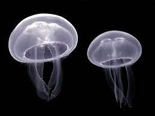

Acuarium Toda la informacion sobre los animales marinos que puedes encontrar en acuarios
Conoce más sobre los animales del oceano marinos y las capas del oceano
¡Zona Pelagica!
El océano es una gran masa de agua que cubre el 71% de la superficie de la Tierra, pero su profundidad continúa siendo un gran misterio para la ciencia. El término "pelágico" deriva de la palabra griega “pelagos”, que significa océano. La zona pelágica (hasta los 605 metros de 11034 metros. Es donde se concentra la mayor cantidad de seres vivos. De hecho, estos seres vivos cumplen una función muy importante. Porque los microorganismos que habitan ayudan a regular los niveles de dióxido de carbono de la atmósfera) es la columna de agua que está sobre el fondo marino. En sentido horizontal, incluye a la zona nerítica, ubicada sobre la plataforma continental y cuya profundidad máxima es de 200 metros; y a la zona oceánica, que se extiende desde el borde la plataforma continental hacia mar afuera. Algunos autores limitan la zona pelágica a la región oceánica, excluyendo así a la zona nerítica.
Las especies de animales pelagicos son los que podemos encontrar cerca de la costa, con peces, tortugas, y delfines desde 0 a 60 metros de profundidad, las orcas a 60 metros de profundidad, tiburon ballena a 70 metros, algo que es muy poco comun de encontrar es un pulpo gigante, ya que este se puede encontrar a profundidades de 100 a 2000 metros, pez remo gigante a 200 metros, cangrejo gigante japones a 300 metros, a 500 metros podras encontrar a una ballena azul, .Tambien podras encontrar buzos de 20 a 40 metros, pero si encuentras uno a 100 metros, deberia ser un profesional por resistir el sindrome de descompreción.
¡Zona Batial!
Entre los 1.000 y los 4.000 metros. A esta zona oceánica no llega la luz y en ella la comida es escasa. Algunas de las especies que viven en ella no tiene ojos. La zona batial o batipelágica. Aquí, la luz solar ya no está disponible, la presión hidrostática es mayor y la temperatura del agua es de 4 °C en promedio. La zona batial contiene tiburones, calamares, pulpos y muchas especies diferentes de peces. Esto incluye de aguas profundas rape, anguila gulper, anfípodos y dragonfish.

¡Zona Abisal!
Zona abisal, entre los 4.000 y los 6.000 metros. La fauna solo puede nutrirse de los detritos que caen de la superficie. Además, la mayoría de los seres vivos que viven en ella son bioluminiscentes. La zona abisal, también conocida popularmente como reino abisal, es una capa del océano profundo donde se encuentran gran parte de los fondos marinos. Es un mundo donde las condiciones son extremas y que alberga, sin embargo, una gran riqueza de vida.
¡Zona Hadal!
Zona hadal, más de 6.000 metros. Los seres vivos deben soportar 1.100 atmósferas de presión. Debido a su profundidad, es una porción del océano muy poco estudiada. En su mayoría son los denominados peces rata, también hay ofiuros (parientes de las estrellas de mar), hay organismos bénticos, como algunas medusas y algunos pepinos de mar. Existen también peces cartilaginosos y especies como el pulpo dumbo, que vive a 5000 metros, casi en la zona hadal.
.jpg)
.jpg)
.jpg)
.jpg)
.jpg)